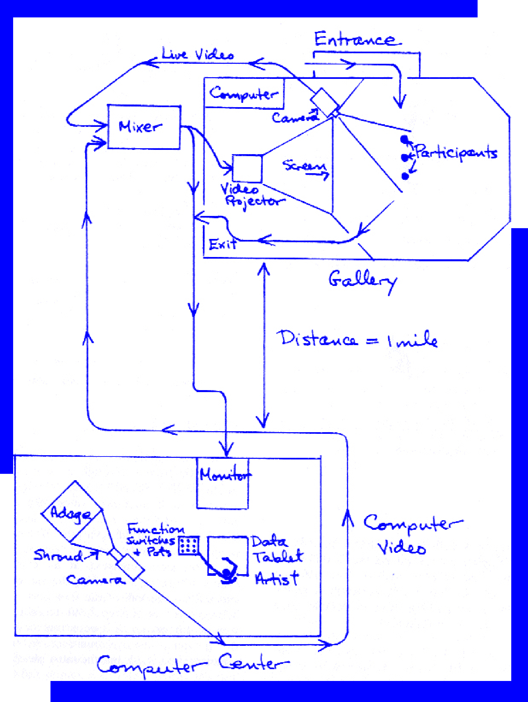
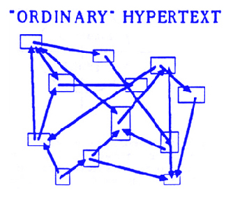

- Krueger, artista pioneiro em "Responsive Enviraments", procurou desenvolver uma pesquisa que consistia na exploração de novos meios em que a participação do público é ativa. Os ambientes responsivos utilizam o uso da tecnologia sensorial e computicional reconhecendo os movimentos humanos. Em Computer Lib/Dream Machines, de Ted Nelson são dois livros, costas com costas. Computer Lib aborda o funcionamento interno do computador para leigos. E Dream Machines, discute o potencial dos computadores. O conjunto dos dois textos aborda a máquina e a ligação que tem com o homem, ou seja, mudar a ideia que os sistemas e as máquinas possam ser acessíveis para qualquer pessoa e interativas, em que o público possa interagir.
-

METAPLAY - Derivou da GLOWFLOW (a ideia deste conceito era criar uma sala escura com tubos de luz em que o chão estava coberto de sensores, o computador responderia aos passos e transmitiam sons gerados por um sintetizador. Para Krueger, este conceito a nível visual resultou bem, no entanto, na interação do público entre a máquina era inexistente.) – Enfatizou a interação entre o público e o ambiente. Existindo interação em tempo real entre o artista e o público.
-
PSYCHO SPACE - Ambiente de expressão musical e visual em que o objetivo era que o público interagisse no ambiente no qual estavam presentes, havendo um programa que fazia a interação do humano com o sistema.
-
ENVIRONMENT AND PARTICIPANTS -“In order to focus on the relationships between the environment and the participants, rather than among participants, only a small number of people should be involved at a time.”[3]KREUGER, M. W. (1977). Responsive environments. in The New Media Reader (pp.379-389). Cambridge, Massachusetts: MIT Press.
DYNAMIC PARTICIPATION - “Since the goal was to encourage the participants to express themselves through the environment, the program automatically responded to the footsteps of people entering the room with electronic sound.”[3]KREUGER, M. W. (1977). Responsive environments. in The New Media Reader (pp.379-389). Cambridge, Massachusetts: MIT Press.
UNUSUAL DIALOGUE - “These facilities provided a rich repertoire for an unusual dialogue. The artist could draw pictures on the participants.”[3]KREUGER, M. W. (1977). Responsive environments. in The New Media Reader (pp.379-389). Cambridge, Massachusetts: MIT Press. -
VIDEOPLACE - O vídeo era o principal foco desta interação, permitia uma experiência visual entre duas pessoas em que estivessem em diferentes espaços.
-
USER INTERFACE - “It will enter every home and office and intercede between us and much of the information and experience we receive.”[3]KREUGER, M. W. (1977). Responsive environments. in The New Media Reader (pp.379-389). Cambridge, Massachusetts: MIT Press.
HARDWARE AND SOFTWARE - "The control system includes hardware and software control of all inputs and outputs as well as processing for decisions that are programmed by the artist. He must balance his desire for interesting relationships against the commitment to respond in real-time.”[3]KREUGER, M. W. (1977). Responsive environments. in The New Media Reader (pp.379-389). Cambridge, Massachusetts: MIT Press. -
HYPERTEXT -“Hypertext” means forms of writing which branch or perform on request; they are best presented on computer display screens.”[4]NELSON, T. (1960).From Computer Lib / Dream Machines. in The New Media Reader). Cambridge, Massachusetts: MIT Press
USER IN RESPONDING ENVIRONMENT -“This concept extends itself naturally to fantic space, the space and relationships sensed by a viewer of any medium, or a user in any presenting or responding environment.”[4]NELSON, T. (1960).From Computer Lib / Dream Machines. in The New Media Reader). Cambridge, Massachusetts: MIT Press
DIALOGUE -“Moreover, dialogue by simple systems tends to have a fake quality. It is by no means obvious that phony dialogue with a machine will please the student.”[4]NELSON, T. (1960).From Computer Lib / Dream Machines. in The New Media Reader). Cambridge, Massachusetts: MIT Press -

Diagrama de Hipertextos, Ted Nelson's Literary Machines.
-
INTERACTIVE COMPUTER SYSTEMS -First of all, I feel that very few people understand what interactive computer systems are about.”, “For people who want to work incessantly in an environment, and on other things(…)”[4]NELSON, T. (1960).From Computer Lib / Dream Machines. in The New Media Reader). Cambridge, Massachusetts: MIT PressNELSON, T. (1960).From Computer Lib / Dream Machines. in The New Media Reader). Cambridge, Massachusetts: MIT Press
MAN-MACHINE SYSTEMS -“The psychological constructs of man-machine systems may turn out to be largely arbitrary.”[4]NELSON, T. (1960).From Computer Lib / Dream Machines. in The New Media Reader). Cambridge, Massachusetts: MIT Press